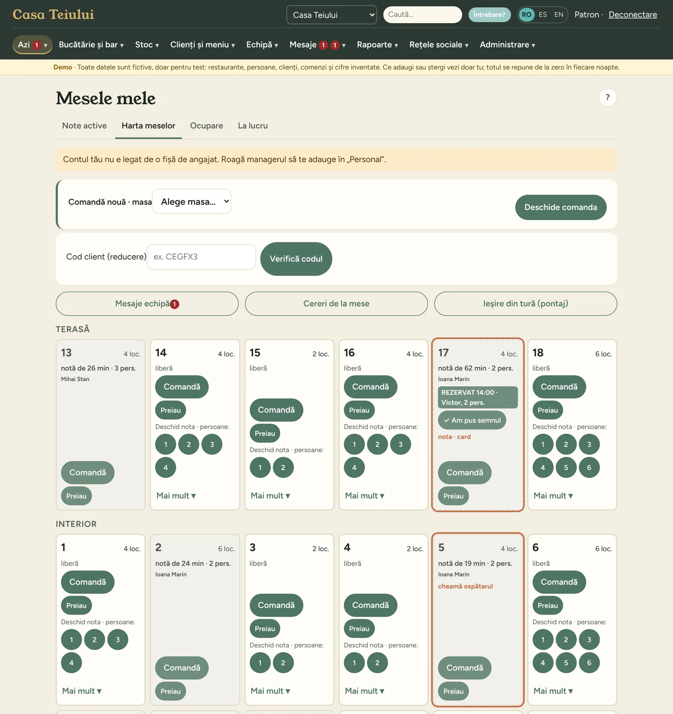
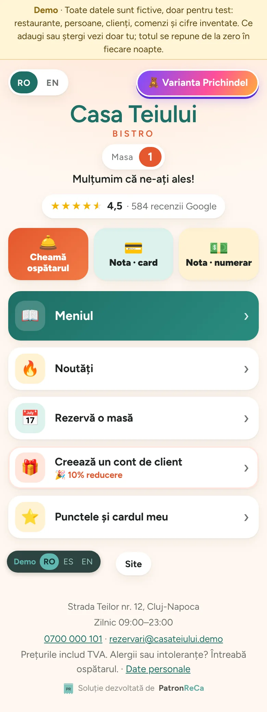
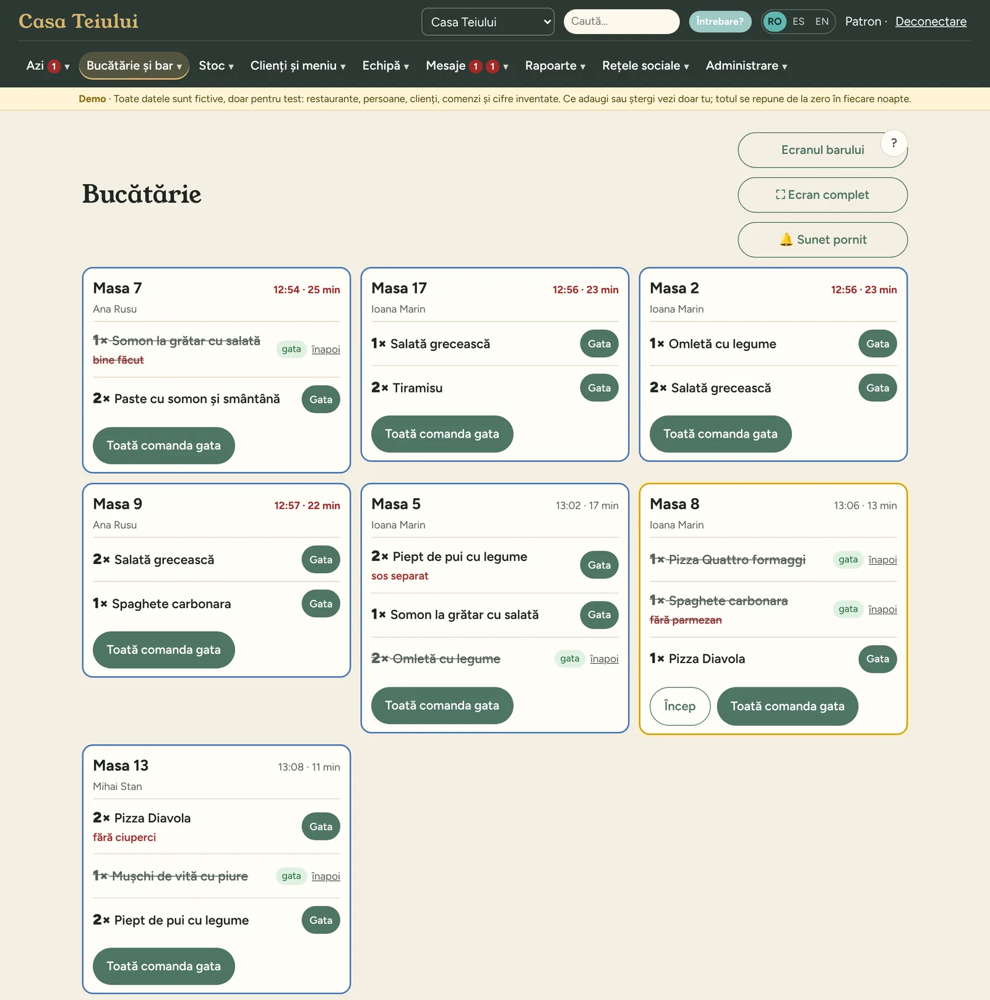
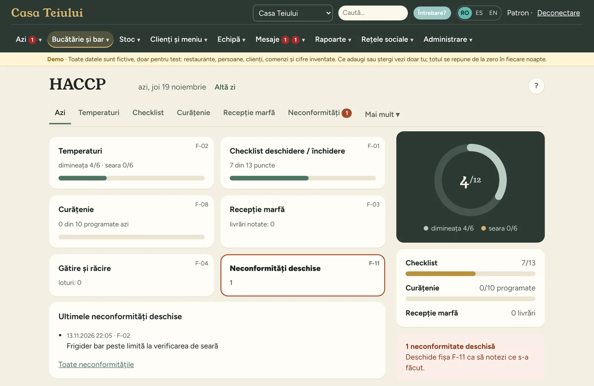
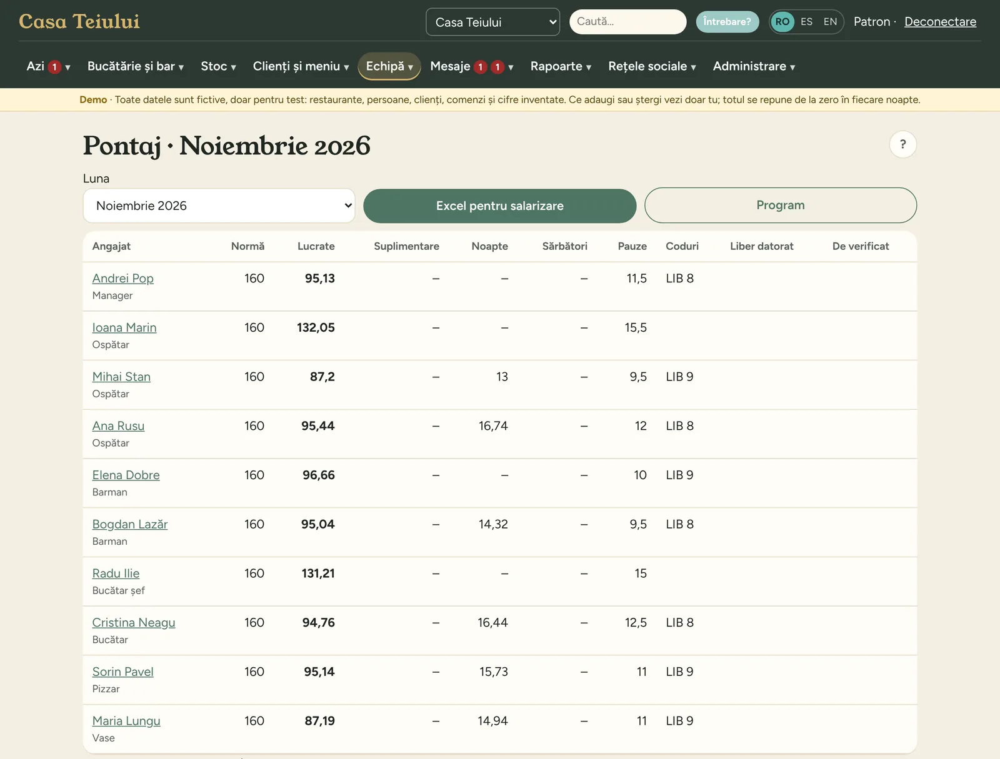
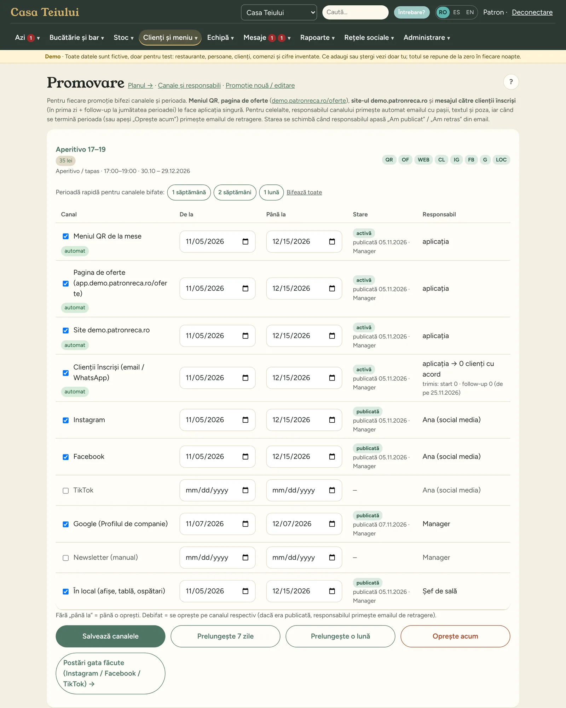
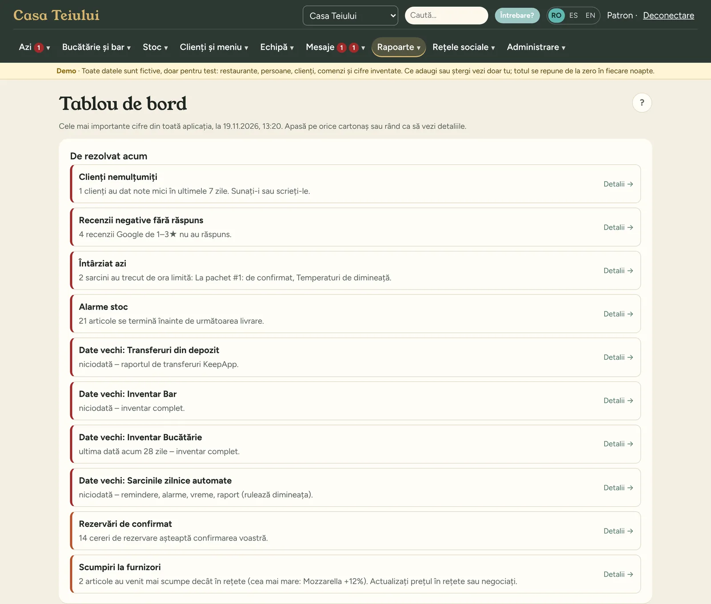

Servicii / Aplicația pentru restaurante
Software HoReCaO singură aplicație pentru tot restaurantul.
Sala, bucătăria, stocul, echipa, clienții și marketingul, pe telefon, tabletă și calculator. Fiecare om vede ce îi trebuie, după rolul lui.


Aplicația noastră, versiunea demo. Toate datele sunt fictive.
Tot ce se întâmplă într-un restaurant, într-un singur loc.
Sala și comenzile
Ospătarii văd toate mesele, iar comenzile ajung singure unde trebuie.
- Harta meselor pentru fiecare ospătar, cu notele deschise și cererile de la mese („cheamă ospătarul”, „nota cu cardul”)
- Comenzile din tabletă ajung direct pe ecranul bucătăriei și al barului, cu rețeta și poza
- „Sala acum”: ocuparea, notele deschise și cine e la lucru
Încă 2 funcții
- Predarea turei, închiderea casei și bacșișul
- Închiderea zilei pe e-mail în fiecare dimineață: vânzări, pontaj, HACCP, risipă

Meniul QR și clienții
Clientul scanează codul de pe masă și are tot ce îi trebuie.
- Pagina mesei: meniu cu poze, alergeni și valori nutriționale, promoții pe zile și ore, meniu pentru copii, nota Google
- Meniul în trei liste (QR, tipărit, de revizuit), cu versiuni, legat de casa de marcat pe PLU
- Rezervări online confirmate de client, cu zile închise și reguli de masă
Încă 3 funcții
- Comenzi la pachet cu plată online și tabletă cu alarmă
- Factură pe firmă din bonul fiscal, primită pe e-mail
- Card de fidelitate: reducere la următoarea vizită, puncte, misiuni, zi de naștere, Google Wallet

Bucătărie, bar și stoc
Știți în orice moment cât costă o porție și ce lipsește din stoc.
- Rețetar cu versiuni, cost pe porție și marjă
- Mise en place, alergeni, risipă și consum personal
- HACCP digital: temperaturi, curățenie, recepția mărfii, documente pentru control
Încă 3 funcții
- Stoc: intrări comparate cu consumul din rețete, alarme sub minim, inventar complet sau parțial
- Comenzi la furnizori propuse din stoc; scumpirile apar ca alertă, cu efectul în costuri
- Facturile furnizorilor pleacă săptămânal la contabilitate


Echipa
Program, pontaj și comunicare, fără grupuri de WhatsApp și foi pe perete.
- Programul pe lună și raportul de ore
- Pontaj de intrare și ieșire pe tabletele localului
- Mesaje între colegi și predarea turei
Încă 1 funcții
- Cont propriu pentru fiecare angajat, cu drepturi pe rol

Clienți și marketing
Clienții revin, iar promoțiile ajung peste tot dintr-un singur loc.
- Clienți cu acord GDPR și mesaje automate pe e-mail sau WhatsApp: „ne e dor de tine”, reducere care expiră, cerere de recenzie a doua zi
- Promovare pe canale: meniu QR, site, clienți înscriși, Instagram, Facebook, Google, în local
- Postări gata făcute pentru Instagram, Facebook și TikTok
Încă 2 funcții
- Agent IA pe WhatsApp, non-stop, în RO și EN
- Rețele sociale și recenzii Google cu răspuns din aplicație

Rapoarte
Decizii pe cifre, nu pe impresii.
- Tablou de bord pentru manager
- Vânzări pe zile, ore și produse, cu vremea și evenimentele
- Matricea meniului: vedete, de promovat, de scos
Încă 1 funcții
- Controalele autorităților, documentele și impactul aplicației înainte și după pornire

Administrare și siguranță
Fiecare vede doar ce îi trebuie.
- Roluri: ospătar, bucătar, bar, manager, administrator, contabil
- Drepturi pe fiecare funcție, jurnal de activitate, cine e online
- Backup automat
Încă 1 funcții
- Mai multe restaurante într-un singur cont, în română, engleză și spaniolă
Folosită zilnic într-un bistro.
Aplicația rulează într-un bistro din zona HoReCa: de la comenzile de la mese până la recenziile Google și promoții. Nota Google e 4,8, din peste 1.600 de recenzii, iar peste 1.100 de recenzii au primit răspuns automat.
Proiect real. Cifre verificate în noiembrie 2026, rotunjite. Capturile de pe această pagină sunt din versiunea demo, cu date fictive.
Merge bine împreună cu
Toate serviciileVreți să vedeți aplicația în acțiune?
Vă arătăm versiunea demo în 30 de minute, pe exemplul restaurantului vostru.